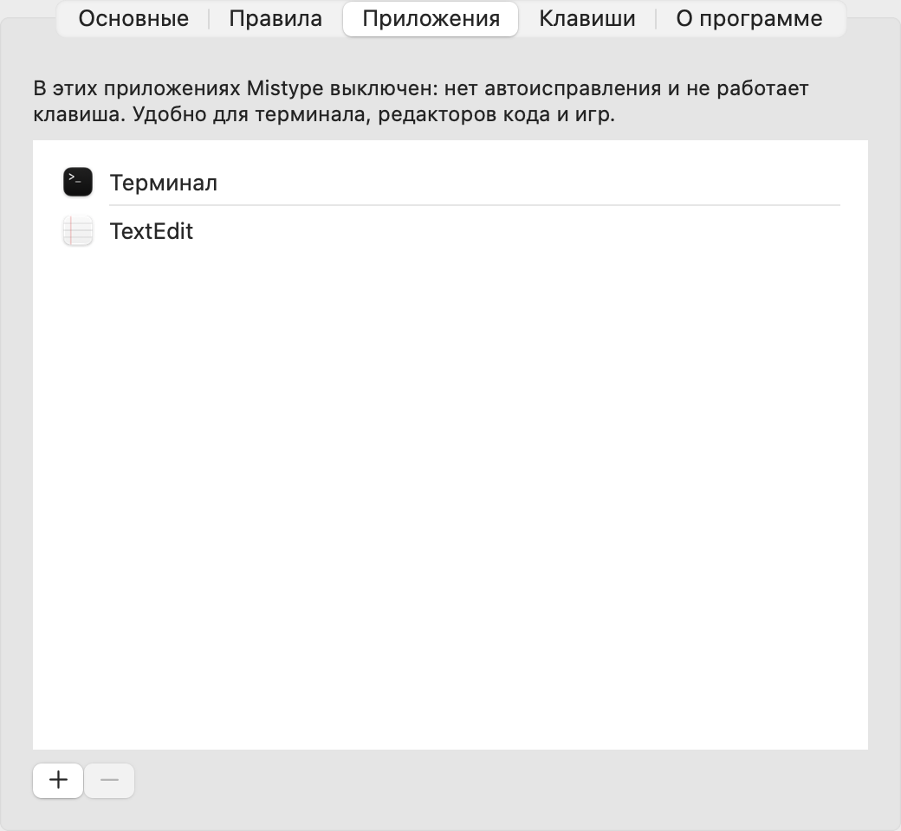
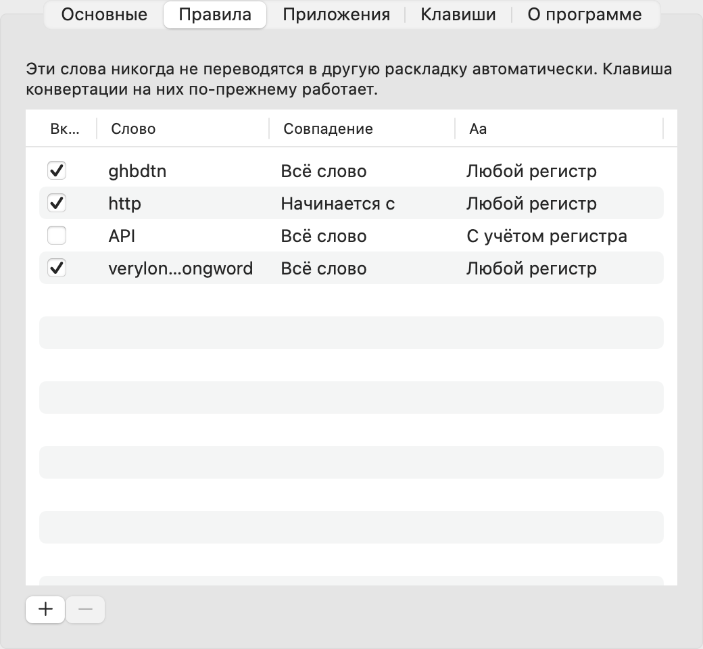

Напечатали не в той раскладке? Mistype исправит.
Программа для Mac сама замечает, что вместо «привет» получилось «ghbdtn», и перепечатывает слово правильно. Бесплатно и без подписки.
Знакомо?
Платить каждый год за переключение раскладки
Чаще всего на похожие программы жалуются из-за подписки. А из России их ещё и не всегда получается оплатить.
Перестаёт работать после обновления macOS
Пропускает слова, теряет буквы, переключает, когда не просили, или вообще не запускается на новых Mac.
Как это работает
- Скачайте и откройте Mistype. Он живёт в строке меню и показывает текущую раскладку: RU или EN.
- Разрешите ему видеть ввод. Окно подскажет, где это включить. Это нужно один раз.
- Печатайте как обычно. Слово в неправильной раскладке исправится, как только вы нажмёте пробел. Нужно поправить вручную или вернуть как было — нажмите ⌥.
Что внутри
Бесплатно, без подписки
Все возможности сразу. Нечего продлевать и нечего отменять.
Не мешает в коде
Выберите приложения, где Mistype молчит: Терминал, редакторы кода, игры.
Ваш ввод остаётся у вас
Ничего из напечатанного не сохраняется и не уходит в интернет. Поля паролей пропускаются.
Своя клавиша
Конвертация последнего слова или выделенного текста — по ⌥ или по любой другой клавише.
Короткие слова тоже
«z ljvf» станет «я дома»: предлоги и союзы исправляются вместе со следующим словом.
Сделан для новых Mac
Родная программа для Apple Silicon, проверена на свежей macOS. Интерфейс на русском и английском.


Цена
Вопросы
Зачем Mistype разрешение «Универсальный доступ»?
Чтобы видеть, какие клавиши вы нажимаете, и перепечатать слово в другой раскладке. Без этого разрешения macOS не даёт ни одной программе исправлять текст в чужих окнах.
Что он отправляет в интернет?
Только запрос «какая последняя версия?» на GitHub, раз в день. Отключается во вкладке «О программе». То, что вы печатаете, никуда не уходит и не сохраняется.
macOS пишет, что не может проверить разработчика. Что делать?
Mistype пока не подписан сертификатом Apple для раздачи. Откройте его один раз так: Системные настройки → Конфиденциальность и безопасность → внизу «Всё равно открыть» рядом с Mistype.
Работает ли на Mac с Intel?
Пока нет: только Mac на Apple Silicon (M1 и новее) с macOS 15 или новее.
Какие раскладки поддерживаются?
Русская (вариант «Русская – ПК») и английская (ABC или US). Другие языки пока не поддерживаются.
Как обновлять?
Mistype сам проверяет новые версии и покажет в меню «Доступно обновление». Скачайте новую версию и замените ею старую в папке «Программы».